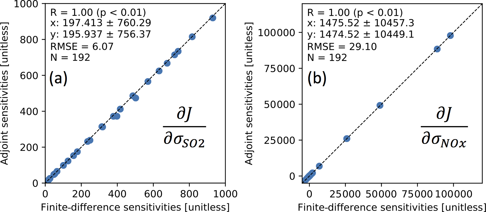
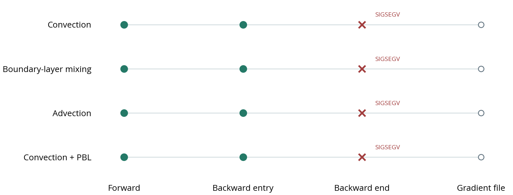
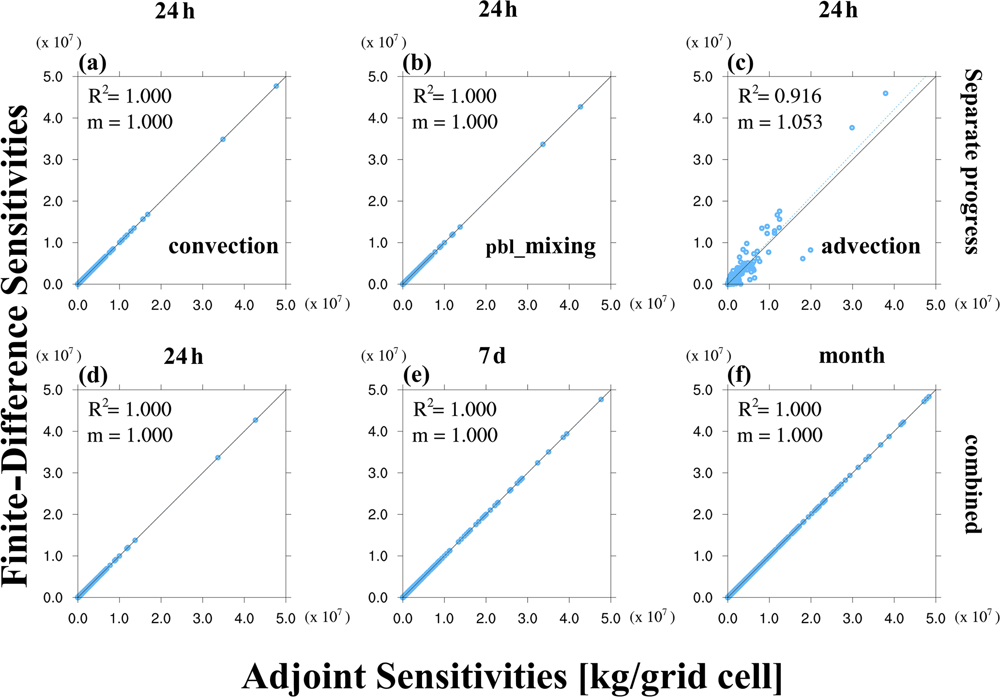
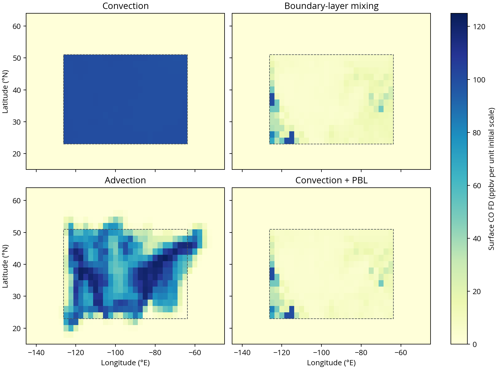
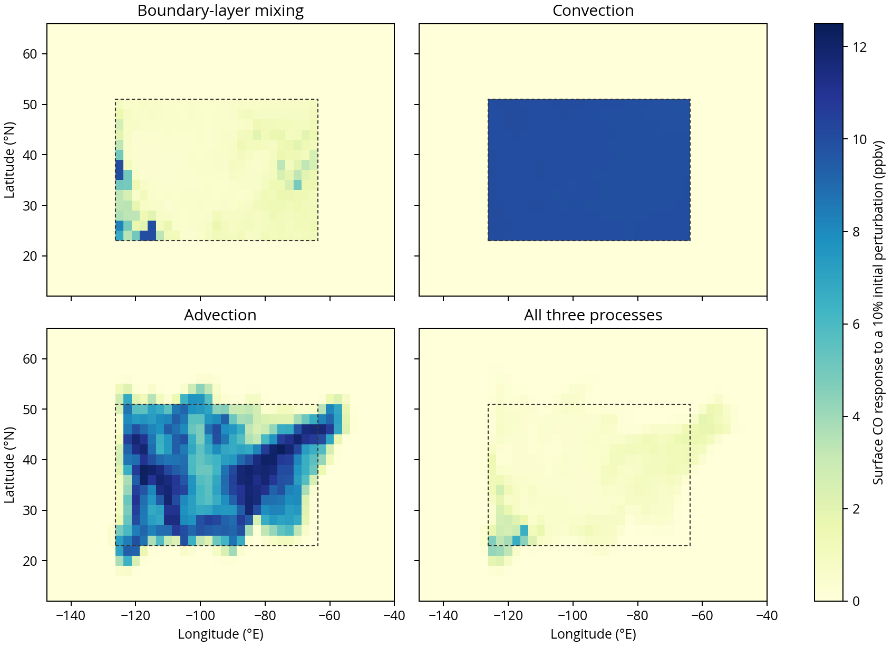
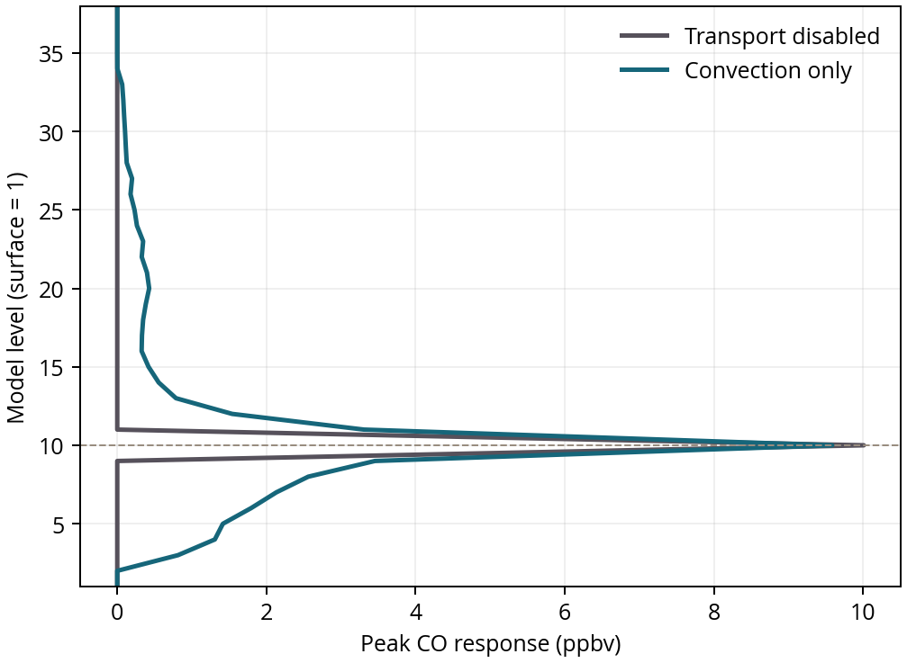

GC-adjoint v36 · GEOS-FP 2°×2.5° 基准复现报告
核对日期为 2026-11-27。下方逐图并排展示论文原图和本站运行证据。Wang 2020 Fig. 1 的两组观测梯度尚未复现。Tang 2023 Fig. 6 的四个 24 小时过程开关已在本站 GEOS-FP 2°×2.5° 上逐一测试，四组均完成前向，原版伴随均停在首次反向检查点。 本站另完成 23 个 24 小时前向对照、扰动和重复运行。本文保留发表图中的量和单位，本站初值梯度单独列表。逐面板对照表 · 四个 24 小时作业的验收记录
Wang 等（2020）Figure 1 · 同网格、同气象类型
| 论文原图 | 本地实测证据 |
|---|---|
 |
 |
| 原图 Fig. 1(a–b)。横轴为中心差分，纵轴为伴随灵敏度。两面板各 192 个格柱，发表图的 R = 1.00。SO₂ 人为排放的 RMSE = 6.07，NOₓ 为 29.10，量纲均为无量纲。 | 本站原版 v36 的反向入口检查。右图来自四个被动 CO 作业的实际日志。前向均完成，反向均已进入，梯度文件数均为 0。Wang 的 SO₂、NOₓ 面板本地没有同协议样本，R、RMSE 与差值暂无可比结果。 |
论文使用 GEOS-FP、全球 2°×2.5°、47 层，在中国域做 3 天柱试验。关闭水平输送，代价函数使用 OMPS 的 SO₂、NO₂ 柱，剔除先验惩罚。扰动变量是人为排放缩放因子的对数 σ = ln(E/Eₐ)。 |
本站匹配水平网格和 GEOS-FP 类型，垂直为 72 层，作业使用 2013-07-01 的 24 小时被动 CO。论文应用为 2013 年 10 月，Fig. 1 的具体三天与扰动幅度未在图注或 §3.1 给出。 |
| 按图复跑还需 47 层研究用月初状态、原用 MIX 2010 人为排放输入、三天筛选后的 OMPS 像元、作者的两个观测算子、192 个格柱索引，以及两套原始梯度用于逐格检验。论文公开了卫星产品下载入口。 | 服务器有 2013 年 10 月的同网格 GEOS-FP 日气象。当前未取得该图的原始成对梯度、观测算子及精确算例配置。验收须在同一批 192 个格柱上分物种重算 Pearson R 和 RMSE，保留发表图显示精度。 |


左栏原图来自 Yi Wang 等（2020），图像未改绘。右栏证据对应本站作业 353009_0–3。论文 §3.1 · 原图文件 · 数据说明 · CC BY 4.0

Tang 等（2023）Figure 6 · 逐过程对照
| 论文原图 | 本地实测图 |
|---|---|
 |
 |
| 原图 Fig. 6(a–f)。横轴为伴随，纵轴为中心差分，量纲为 kg/格。前向对 CO 排放缩放因子 做 ±10% 扰动，比较全球末时刻第一层 CO。模型为 v35n GC-Adjoint-HEMCO，4°×5°、47 层。 | 本站 24 小时末地面 CO 中心差分。右图是用正负前向重启独立计算的 (q₊ − q₋)/0.2，量纲为 ppbv/单位初值缩放。模型为原版 v36，GEOS-FP 2°×2.5°、72 层，对 350 个格点的 初始 CO 做 ±10% 扰动。虚线为扰动区。 |
| 原文 §3.1 分别开启对流、PBL、平流，组合面板关闭平流。本图的起始日和气象产品未在 §3.1 单列。 | 四组均用 2013-07-01 的同一份 GEOS-FP，组合只开启对流和 PBL。本地还评估了带平流的三过程联用，见下文 24 小时表。 |


左栏原图来自 Zhaojun Tang 等（2023），图像未改绘。由于缩放对象、网格和单位不同，右栏地图用于核对本站输送和过程开关。对流面板的近地面响应可在源区保留而不出现足够强的垂直信号，另有西太平洋第 10 层对流验证。论文 §3.1 · 原图文件 · 作者源码 · CC BY 4.0

| 论文面板及发表值 | 本站对应配置及实测结果 |
|---|---|
| (a) 仅对流，24 h。R² = 1.000，斜率 m = 1.000。 | 353009_0。地面中心差分峰值 100.365 ppbv/单位缩放。伴随进入后 SIGSEGV。 |
| (b) 仅 PBL，24 h。R² = 1.000，m = 1.000。 | 353009_1。地面中心差分峰值 100.190 ppbv/单位缩放。伴随进入后 SIGSEGV。 |
| (c) 仅平流，24 h。R² = 0.916，m = 1.053。论文使用离散前向和连续平流伴随，报告了较大的梯度偏离。 | 353009_2。地面中心差分峰值 123.671 ppbv/单位缩放，源区外响应达到阈值的格柱为 128 个。伴随进入后 SIGSEGV。 |
| (d) 组合且关闭平流，24 h。R² = 1.000，m = 1.000。 | 353009_3–6。对流加 PBL，关闭平流，地面中心差分峰值 100.190 ppbv/单位缩放。同组 3 次扰动和基准正向运行完成。伴随进入后 SIGSEGV。 |
| (e) 组合且关闭平流，7 d。R² = 1.000，m = 1.000。 | 本地此轮只验证了 24 h 窗口。 |
| (f) 组合且关闭平流，1 个月。R² = 1.000，m = 1.000。 | 本地此轮只验证了 24 h 窗口。 |
四个 24 小时原版 FD_GLOB 作业均保留了时标正确的前向 CO 重启，均在相同的检查点调用地址崩溃，模式退出码为 174。四组本地的伴随–中心差分配对点数为 0，因此无法计算 R²、斜率或与论文的差值。原复现需要作者的排放输入、精确窗口、初值和图 6 的输出筛选。论文发表值与本地配对状态 CSV · 本地作业记录
配置和判据
- 全球 144×91×72，时间为 2013-07-01 00:00 至 2013-07-02 00:00 UTC。动力和对流步长 15 分钟。初值为 100 ppbv 被动 CO，关闭排放、化学和干湿沉降。原版二进制来自作业 352589，编译副本只切换
define.h中的 GEOS-FP、2°×2.5° 选项，Fortran 源文件沿用 v36 本地原始工作版本。环境为 Intel Fortran 2021.3，4 个 OpenMP 线程。 - 直接使用服务器
[local path]的 A1、A3cld、A3dyn、A3mstC、A3mstE、I3，以及 2011-01-01 CN 静态场。旧版运行目录要求GEOS_FP名称，通过符号链接接入。气象文件内容和时间未转换。输入 SHA-256 · GEOS-Chem 气象说明 - 地面扰动用北美 125°W–65°W、24°N–50°N 的 350 个第一层格点。对流补充实验用西太平洋 120°E–160°E、10°S–10°N 的 187 个第 10 层格点。每组分别乘以 0.9、1.0、1.1。用
(CO₊ − CO₋)/2表示对 10% 初值扰动的中心响应，除以 0.1 即为对初值缩放因子的中心差分梯度。用(CO₊ + CO₋)/2 − CO₀衡量响应的非对称程度。 - 验收要求前向日志正常结束、退出码为 0、BPCH 重启包含全部 943,488 个有限正值、有效时间为 07-02 00:00 UTC。无输送对照的独立预期是受扰格的响应等于该格末时刻基准 CO 乘以实际初值相对扰动，其余格为零。这个关系允许网格干空气质量随气象变化。无平流的列算例的域外响应和中点误差阈值为
3×10⁻⁵ ppbv，主要用于容纳 BPCH 单精度舍入。
24 小时复算结果
| 算例 | 扰动层 | 初始扰动层以上的最大响应（ppbv） | 达到 0.01 ppbv 的最高模式层 | 源区外达到 0.01 ppbv 的格柱数 | 最大中点残差（ppbv） |
|---|---|---|---|---|---|
| 无输送对照（北美） | 1 | 0 | 1 | 0 | 3.55×10⁻⁶ |
| 仅边界层混合（北美） | 1 | 5.005 | 22 | 0 | 3.55×10⁻⁶ |
| 仅对流（北美地面扰动） | 1 | 0 | 1 | 0 | 3.55×10⁻⁶ |
| 仅平流（北美） | 1 | 9.168 | 11 | 128 | 3.62×10⁻⁴ |
| 平流、对流和边界层混合（北美） | 1 | 4.222 | 32 | 171 | 5.61×10⁻⁴ |
| 无输送对照（西太平洋） | 10 | 0 | 10 | 0 | 3.55×10⁻⁶ |
| 仅对流（西太平洋高架扰动） | 10 | 3.308 | 33 | 0 | 3.55×10⁻⁶ |
两个无输送对照与独立预期相差均小于 3.56×10⁻⁶ ppbv。仅平流的均匀背景在 24 小时后落在 99.999866–100.006773 ppbv。独立重跑的同一试验重启文件逐字节相同，SHA-256 为 7f666880c1355fe57f8b47c4f4c0510fce75c886197737cda6a13a1c2367d6b2。三过程联用的中点相对 L₂ 残差为 0.00948%。这是正负前向扰动的闭合误差。水平影响按扰动区外各格柱任一垂直层的绝对响应统计。逐算例数值
北美地面扰动在仅对流配置下未出现可分辨的垂直信号。为给对流单独设置有信号的测试，从 A3mstE 检查了西太平洋第 10 层附近的对流质量通量 CMFMC，并做仅对流和无输送的正负配对。高架脉冲的对流响应到达第 33 层，在原扰动层以上最大 3.308 ppbv，源区外格柱的响应为零。地面扰动与高架扰动分别使用各自的初值和配对对照。


原版伴随失败复现
使用相同 GEOS-FP 网格和初值，打开 v36 原生 FD_GLOB，仅启用 PBL，窗口缩短为 00:00–03:00 UTC。作业 352976_16 正常完成前向并进入 BACKWARD INTEGRATION，首次 LOAD_CHECKPT_DATA 随即收到 SIGSEGV，模式退出码 174，diagadj/gctm.fdglob.* 未生成。
调试作业 352999 使用同一二进制。在 LOAD_CHECKPT_DATA 入口，TTO3 数组描述符的起始地址为 0x0，而 TTO3_TMP 和 TO3 有有效地址。执行在 TTO3_TMP(:,:) = TTO3(:,:) 对应的内存复制处触发 SIGSEGV。GEOS-FP 的 INIT_DAO_GEOSFP 分配了 TTO3_TMP 和 TO3，GEOS-5 初始化另有 TTO3 的分配。气象读取和 3 小时前向已在同一作业成功。复跑与调试均使用原版可执行文件。原版正向和伴随的状态分别以结束标记验证。
复跑命令和证据
从 EarthModelHub 根目录运行，使用新的运行目录。前向矩阵为 352976_0–15、353000_0–3 和 353009_4–6。原版伴随检查使用 352976_16 和 353009_0–3。先收齐三个数组结果，再执行两个验证脚本。脚本分别检查前向数值、成对诊断和该二进制的反向状态。
repo="$PWD"
p=docs/papers/models/geoschem/paper_replicates/gcadj/geosfp_2x25
py="$repo/prefix/mamba/envs/fair/bin/python"
base="$repo/run/tasks/gcadj_geosfp_2x25_bench"
mkdir -p "$base"
work="$(mktemp -d "$base/replay.XXXXXX")"
sha256sum -c "$p/inputs.sha256"
"$py" "$p/prepare.py" "$work/surface"
"$py" "$p/prepare.py" "$work/elevated" --suite elevated
"$py" "$p/prepare.py" "$work/paper-probes" --suite paper-probes
sbatch --array=0-16%6 -o "$work/surface/slurm-%A_%a.log" "$p/run.sbatch" "$repo" "$work/surface"
sbatch --array=0-3 -o "$work/elevated/slurm-%A_%a.log" "$p/run.sbatch" "$repo" "$work/elevated"
sbatch --array=0-6%6 -o "$work/paper-probes/slurm-%A_%a.log" "$p/run.sbatch" "$repo" "$work/paper-probes"
# Slurm 作业结束后
OPENBLAS_NUM_THREADS=1 "$py" "$p/validate.py" "$work/surface" "$work/elevated"
OPENBLAS_NUM_THREADS=1 "$py" "$p/paper_comparison.py" "$work/surface" "$work/paper-probes"
现有每例的 input.geos、input.gcadj、校验和、日志和重启在 run/tasks/gcadj_geosfp_2x25_bench/20261127_reference 、20261127_elevated 和 20261127_paper_probes。调试日志为前者的 adjoint_debug/debugger.log。准备脚本将前向 ITER 的停止迭代值设为 0。早期尝试使用了 1，驱动程序退出但未积分，验收依据排除了该批输出。运行准备脚本 · Slurm 脚本 · 数值验证脚本 · 论文逐图对照脚本